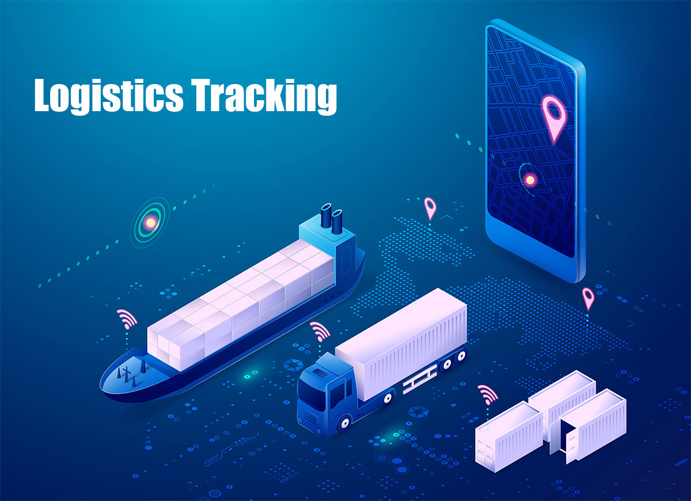
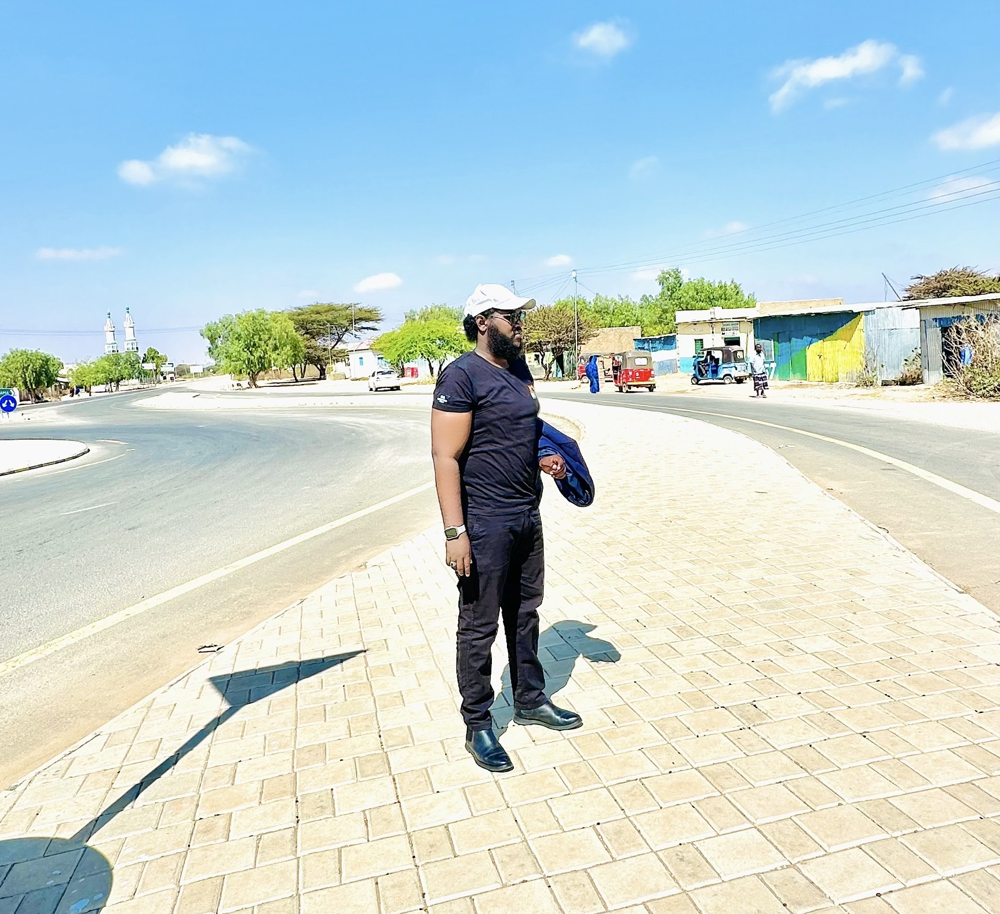
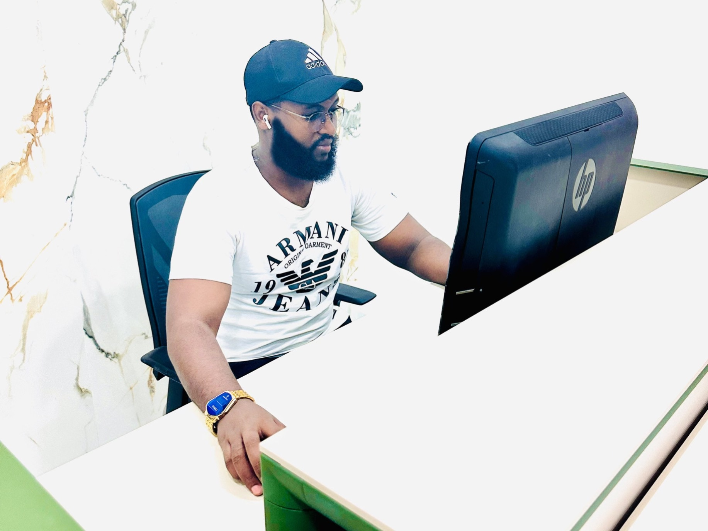
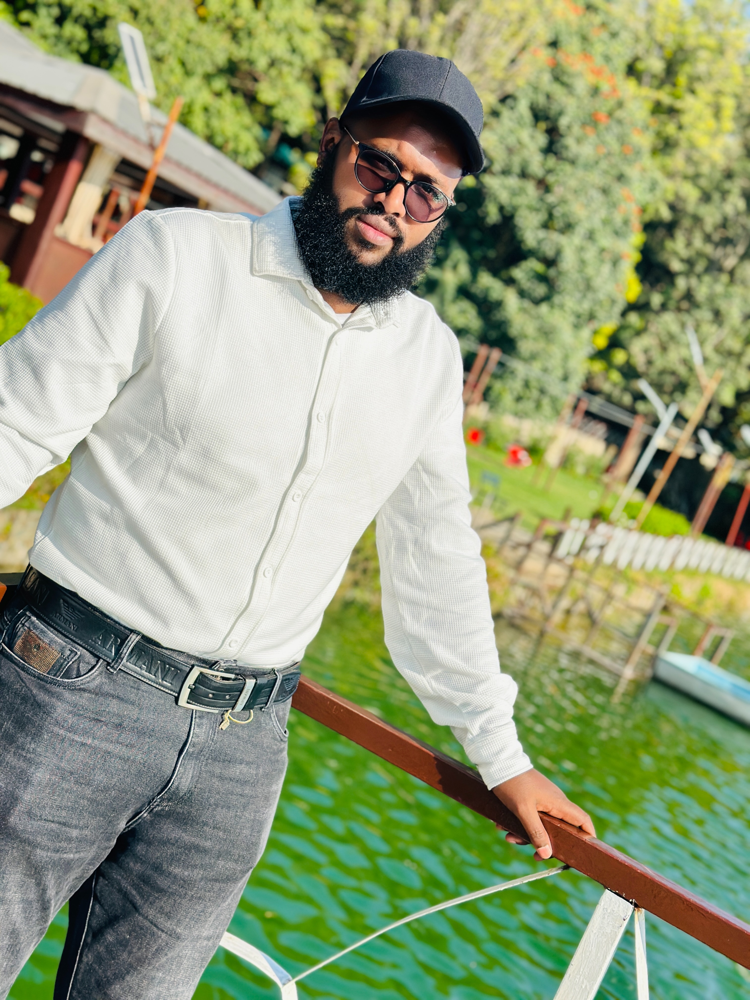
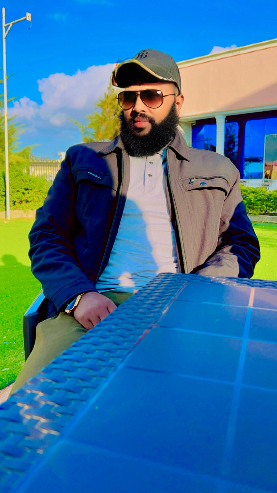

Integrating IT, maritime operations, financial management, auditing, and governance to enhance efficiency, transparency, compliance, and strategic organizational performance.
Multidisciplinary expertise bridging technology, maritime & governance
A highly motivated and results-driven professional with a strong combined background in Shipping & Maritime Operations, IT & Networking, and Auditing & Accounting. Holds a Master's degree in Computer Science and possesses multidisciplinary expertise integrating operational logistics, financial oversight, and technology-driven systems.
Demonstrates solid experience in port and container handling, shipping documentation, customs clearance, and maritime regulatory compliance, alongside formal training in business accounting, payroll systems, auditing principles, and financial statement analysis. Equipped with strong technical capabilities in network administration, cybersecurity, database systems, and IT support.
Recognized for the ability to bridge operational workflows, financial controls, and IT solutions to enhance efficiency, compliance, transparency, and service delivery. Known for strong analytical thinking, attention to detail, time management, teamwork, and leadership abilities, with proven performance in fast-paced environments.
Advancing digital governance for emerging states
"I am a Computer Science graduate specializing in the intersection of Information Technology and Public Governance. My research focuses on designing secure, scalable, and interoperable digital governance architectures for emerging and developing states. My objective is to bridge the structural gap between ICT infrastructure design and institutional governance systems through applied systems engineering and cybersecurity frameworks."
Designing the digital future for emerging states
Proposed Research Title
"Designing Secure and Scalable Digital Governance Architectures for Emerging States"
Many emerging states lack integrated, secure, and interoperable digital governance infrastructures. There is often a structural disconnect between ICT system implementation and governance frameworks.
Formal academic summary and credentials
Master of Science in Computer Science
Research Direction: Digital Governance & Secure Public Systems
Core Expertise: Systems Architecture, Cybersecurity Integration, Distributed Infrastructure
Download Academic CV (PDF)Practical foundations for academic research development
The technical projects in the Portfolio section serve as the practical foundation for future academic research development.
All manuscripts authored by Khadar Ali Aqli (2026)
Manuscript in preparation covering shipping operations and maritime logistics systems.
Download PDFResearch on digital governance frameworks and IT systems for public sector institutions.
Download PDFTechnical paper examining IT infrastructure design and network system architectures.
Download PDF5-Year Strategic Plan (2026–2031)
Academic positioning for PhD supervision
"My research agenda focuses on bridging IT infrastructure and governance systems through secure, scalable, and interoperable digital solutions."
"My work aligns with professors focusing on cybersecurity, distributed systems, and e-governance platforms in European universities."
"Demonstrates hands-on system architecture, blockchain integration, cybersecurity modeling, and digital public infrastructure development."
"Proficient in preparing research proposals, manuscripts, technical whitepapers, and documentation suitable for peer-reviewed journals."
"Projects a 5-year research plan including prototype frameworks, EU collaboration, publication, and applied digital governance contribution."
Academic journey from primary school to postgraduate
Relevant coursework: Algorithms, Data Structures, Machine Learning, Network Security. Thesis: "Optimizing Logistics Networks Using AI."
View CertificateFocus on Computer Science fundamentals, including programming and systems administration.
View Certificate20+ years of hands-on experience across IT, maritime & education
Continuous professional development across disciplines
Recognised qualifications and professional credentials
Technical expertise and professional competencies
Advanced Technical Toolkit
Computer Science skills applied to real-world problems

🚢AI-powered tool using ML to optimize supply chain routes, reduce fuel consumption, and minimize delays. Applied in pilot projects at ports.
Additional Project Visuals




Key accomplishments demonstrating impact in IT, maritime, and education
Led development and deployment of an AI-driven tracking tool, resulting in a 20% increase in operational efficiency and recognition from senior management.
Awarded for outstanding contributions to computer science education, curriculum development in networking and cybersecurity, benefiting over 200 students.
Achieved top scores in CCNA exams, leading to immediate application in network optimization projects and a commendation for technical excellence.
Recognized for implementing biometric systems that enhanced security and reduced processing times by 25% at key port facilities.
Perspectives from those who have worked alongside Khadar
Khadar's integration of IT solutions into our shipping operations transformed our efficiency. His expertise in AI for logistics is unmatched.
As a lecturer, Khadar inspired students with practical insights into cybersecurity. His leadership in institute management was exemplary.
Khadar's network security tools provided robust protection for our systems. Highly reliable and innovative professional.
Khadar's volunteer work in IT literacy has empowered our community. His dedication is truly inspiring.
Sharing knowledge on IT, maritime logistics, and cybersecurity
Exploring how machine learning algorithms can reduce bottlenecks in container handling, based on real-world implementations.
Read ArticleA deep dive into protecting ship-port communication systems from emerging threats, with case studies from Somaliland ports.
Read ArticleDiscussing advancements in wireless tech for real-time tracking and their impact on global shipping efficiency.
Read ArticleInsights exploring how digital governance can improve public services in developing regions like Somaliland.
Read ArticleContributing to community development through IT and maritime safety
Organized workshops teaching basic computer skills to underprivileged youth, impacting over 100 participants and fostering digital inclusion.
Conducted safety training sessions for local fishermen, emphasizing regulatory compliance and first aid, in collaboration with regional authorities.
Led sessions on online safety for schools, reaching 150+ students and promoting secure digital practices.
Available for PhD opportunities, collaboration, consulting, and new projects